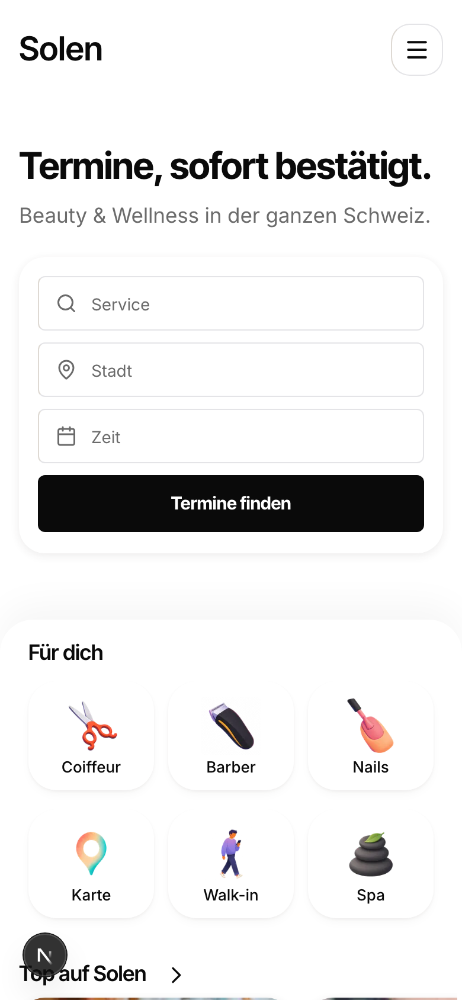
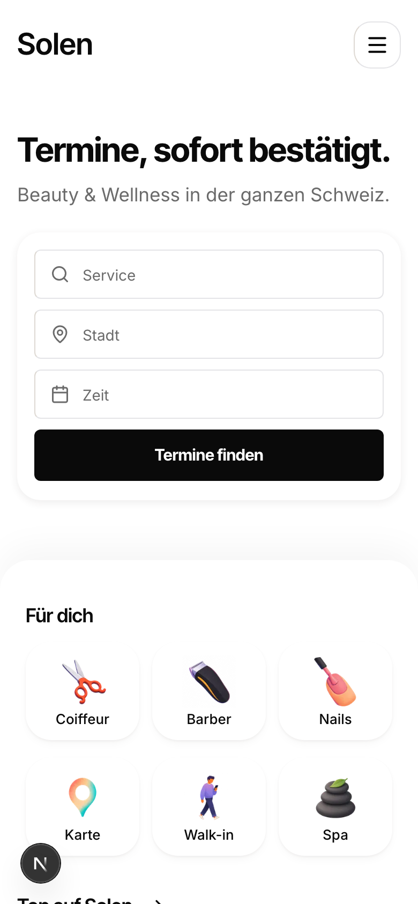
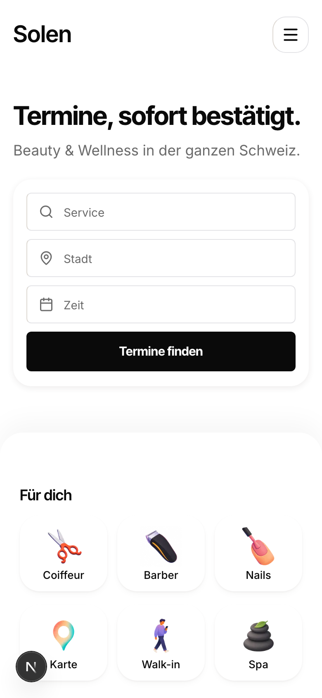
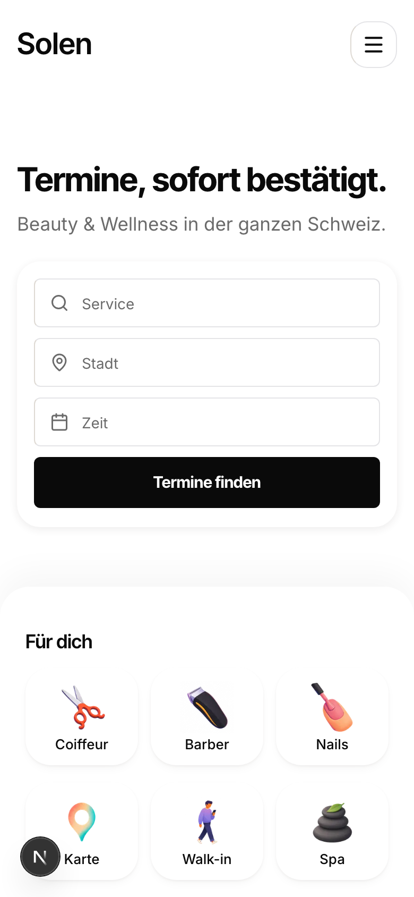

Card back up around 40, as you asked. The tinted bands are the two pieces of white you are comparing: the top gap between the logo and the headline, and the bottom gap between the search card and the category headline. Each number is the real measured height. Every frame is one phone screen (390 x 844) of your live homepage, unredrawn.
Today the two gaps are already close: top 67, bottom 73. So the page is balanced, just tightly. Growing only the bottom gap gives you the air you want but breaks the balance, because the top stays at 67 while the bottom goes to 97 or 121.
The top gap cannot grow while the card stays at exactly 40 percent: the only thing between the logo and the card is the headline block, so any air added at the top pushes the card down. Making both gaps bigger and equal (96 and 97) lands the card at 44 percent, still above the middle and nowhere near the 53 you rejected. That is the only cut where the two bands match at a generous size, which is why it is marked.




| Cut | Top gap | Bottom gap | Matched? | Card centre | Category cards | Page |
|---|---|---|---|---|---|---|
| 1, today | 67 | 73 | yes, but tight | 40.6% | 68% | 4281 |
| 2, bottom 96 | 67 | 97 | no | 40.6% | 71% | 4305 |
| 3, bottom 120 | 67 | 121 | no | 40.6% | 74% | 4329 |
| 4, both 96 | 96 | 97 | yes, generous | 44.0% | 74% | 4334 |
In all four the second row of category cards is cut by the fold, so the bottom always says there is more below. The 32px cadence between the sections further down is untouched, and the worst case costs 53px of page height.